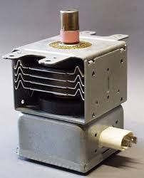

Dal risonatore al magnetron: il passo non è breve ma fattibile... vediamo come.
Ritorniamo alla fig.1 e supponiamo che gli otto risonatori (i fori assimilabili a piccoli circuiti L-C) siano stati eccitati in un qualche modo, creando sulle espansioni polari delle cavità le polarità segnate in figura; nell’istante successivo tutte le espansioni avranno cambiato segno e tale inversione di polarità si ripeterà con la frequenza di risonanza delle cavità stesse (per es. 2 miliardi e mezzo di volte al secondo in un magnetron da cucina).

Figura 1
Se non esistesse un adeguato rifornimento di elettroni sulle espansioni negative le oscillazioni ben presto cesserebbero, ma c'è il catodo che li emette in continuazione... e poi qui viene il bello: come è possibile che gli elettroni (negativi) generati dal filamento vadano a cadere sulle espansioni negative (mentre in teoria dovrebbero esserne respinti), alimentando così le oscillazioni?
Il trucco sta tutto qui, e tanto di cappello a chi l’ha inventato!.
Per fare in modo che gli elettroni vadano a cadere sulle espansioni negative è stato introdotto un forte campo magnetico (da cui il nome MAGNETRON) diretto nella direzione assiale al catodo.
Per effetto di tale campo magnetico, l’elettrone uscito dal catodo e fortemente accelerato dalla espansione positiva dell’anodo che gli è di fronte, viene bruscamente deviato ed assume una traiettoria curva complessa (quei ricciolini in figura), finendo per cadere, se tutto è stato ben dimensionato, dove non avrebbe mai voluto andare, cioè sulla espansione negativa adiacente.
Per ottenere che le traiettorie degli elettroni finiscano realmente sulle espansioni negative è necessario che la frequenza di emissione, le dimensioni interne del tubo, le tensioni degli elettrodi, l’intensità del campo magnetico, e tutti gli altri elementi siano armonicamente calcolati e realizzati.
Una spira immersa in una delle cavità e opportunamente portata fuori, estrae da questo strano “diodo” la potenza a radio frequenza generata, che può essere anche estremamente elevata (anche migliaia di KW per un funzionamento impulsivo come quello dei radar), limitata solo dalla capacità dell’insieme di dissipare il calore prodotto.
Il principio di funzionamento di cui sopra è descritto in forma semplificata, figurata, grezza fin che si vuole, ma è quello che ho cercato di rendere decentemente comprensibile (spero!) riguardo un argomento di non certo facile approccio.
In un forno a microonde per cucina è possibile trovare conferma dell’estrema semplicità della parte generatrice di radiofrequenza: in pratica la parte attiva è il solo magnetron, uno strano marchingegno metallico a lamelle dalla cui "bocca" esce un fiotto di microonde.
Tutto il resto è costituito da circuiti accessori di alimentazione, di temporizzazione per la cottura, di raffreddamento e di sicurezza. L’alimentazione avviene tramite un grosso trasformatore a doppio secondario, uno a bassa tensione e alta corrente per il filamento ed uno a circa 1600 volt per l’anodo.
Nell'immagine seguente si vede come è fatto realmente il misterioso cuore che pulsa nei nostri forni MW.

Il magnetron da cucina consiste quindi in pratica in un blocchetto di rame nel quale sono ricavate un numero pari di piccole cavità ed in un cilindretto ceramico per l’uscita degli elettrodi del filamento e dell’”antenna”; assialmente alle cavità vi sono due grossi anelli in ferrite magnetica, simili a quelli degli altoparlanti, ed il tutto è circondato da un insieme di lamelle in funzione di dissipatore di calore.
La costruzione è decisamente di tipo “consumer”, quindi economica e “leggera”, ben distante dalla raffinata e ben più costosa esecuzione di analoghi magnetron per impieghi militari o industriali, ma evidentemente ciò non inficia il buono ed affidabile funzionamento di questi dispositivi in tutte le nostre cucine.
La frequenza di emissione per i magnetron destinati alla cottura dei cibi è fissata a 2450 MHz, nella banda dei 12 cm; mezza lunghezza d’onda (6 cm) è infatti proprio quella giusta per attraversare e riscaldare con il massimo profitto una patata, un bell’arrostino alle erbette o una tazza di latte.
Una curiosità per finire: perchè non è possibile mettere nel microonde quei piatti ornati col filetto d'oro, quelli che si usavano una volta? (o in genere oggetti metallici) Perchè quella sottilissima strisciolina metallica incorporata nella ceramica costituirebbe una spira chiusa, un vero cortocircuito per la radiofrequenza, ed assorbirebbe gran parte delle potenza emessa dal magnetron riscaldandosi fino a fondere. Vi sarebbe un coreografico scintillio, ma il decoro del piatto della nonna sarebbe rovinato irreparabilmente...
Peggior disastro succederebbe inserendo un CD, secondo uno di quei classici modelli di esperimenti che si trovano su YouTube...